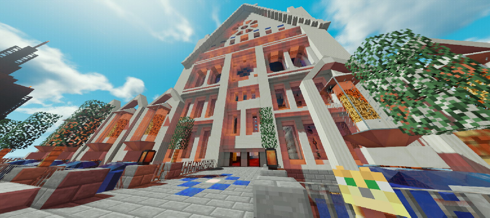

- ・３（土）
シーズン4開始
FruitServer御一行参加 - ・４（日）
Microsoft Windowsのライセンス上限人数(20人)を記録 - ・10（土）
Japan Minecraft Servers 投票数 100 突破 - ・16（金）
Japan Minecraft Servers 投票数 200 突破 - ・20（火）
Japan Minecraft Servers "要クライアントMOD"タグ スコア1位達成 - ・26（月）
Japan Minecraft Servers 投票数 300 突破
- ・18（日）
シーズン4終了
- ・４（金）
シーズン5開始
- ・11（月）
シーズン5終了
- ・6（土）
休日で繁盛していたため勢いで20時にサーバーオープン(シーズン6)
オープン前に手伝ってもらったメンバーのOPを外し忘れて「かびえもん、神になる」
バニラツールが耐久無限になる（修正済み） - ・7（日）
【祝】同時接続数20人！
探索を一直線にしか行わない猛者が暴走しているためワールドボーダーを設ける。
サーバーオープンからずっとモードはハードなのにどう見てもピースフルな状態に
陥っていたのでSpongeForgeを抜く
アンケートも取ってみたがやり直してもいい人は結構いた。でも大佐は続行を選んだ。 - ・10（水）
Kamesuta提供のMODによって投票可能になる。無限に感謝。 - ・14（日）
18時に告知通りにエンドラ討伐を行い無事終わったかと思いきや
Electroblobのシルバーフィッシュがスポーンで増殖。
かつてあったVanityServerのメイド事件のような状態になる。
結果、住民、大佐の判断によってことごとく討伐前の16時のデータでロールバックをすることになる。 - ・15（月）
teacoffee氏の拠点で経験値が大量発生、
怒涛のAll値2000越えの経験値はサーバーを飲み込みTPSを下げていった。
大佐や住民たちが現地に向かうもフリーズ、
そのあと何とか拠点のメンバーが経験値を回収。無事解決した
- ・3（土）
シーズン6終了
- ・25（金）
シーズン7開始 - ・26（土）
ケルタスクォーツ製ツールがあまりにも栗目すぎる性能だったため:ded:されてしまった... - ・27（日）
大佐が誤って鯖のフォルダを削除してしまった為シーズン7終了
- ・9（土）
シーズン8開始 - ・25（日）
第一回オークション開催
- ・29（日）
シーズン8終了
- ・2（土）
新シーズンの開発が滞っていたため急遽シーズン8.5開始
- ・26（日）
シーズン8.5終了
- ・16（金）
シーズン9開始